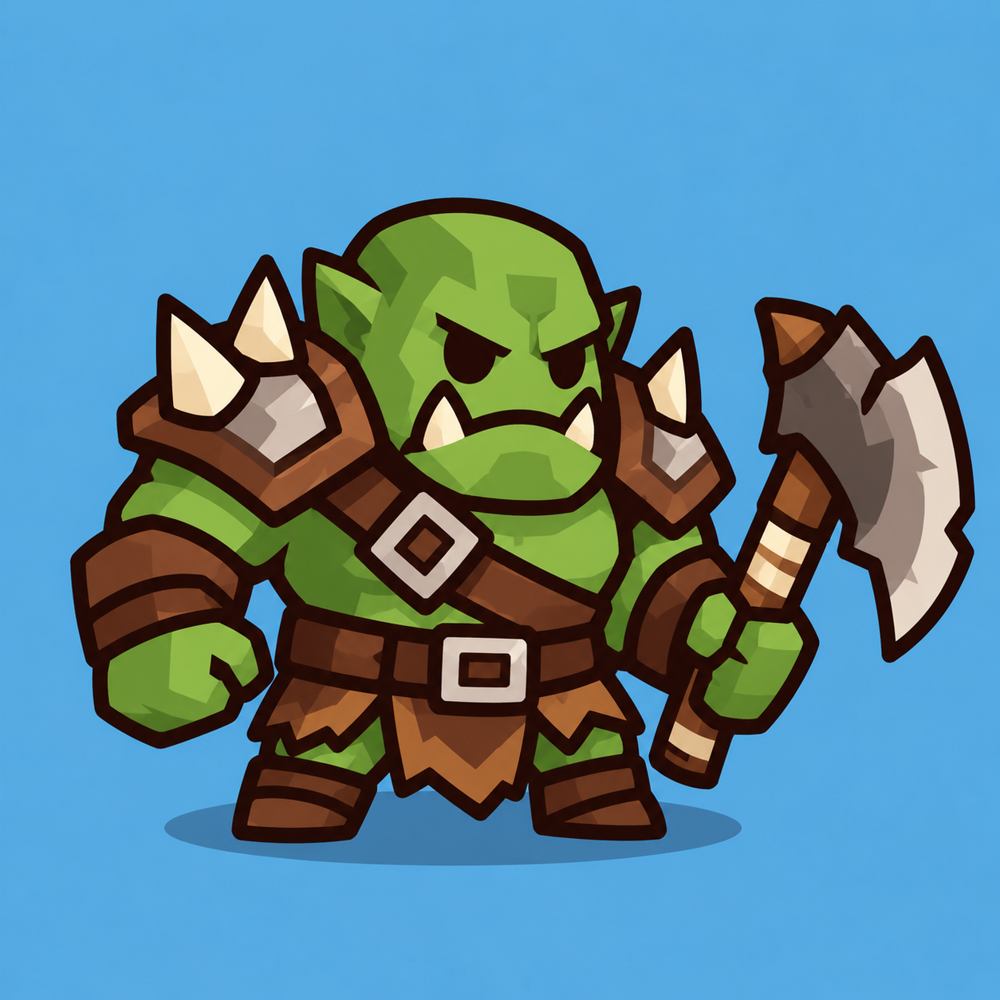

Reference и новая сборка


Orc полностью принят. Отрисован вручную SVG-кодом: семь частей, прозрачный canvas 256×256. Открыть бой Orc · Анимации отдельно.

Enemy visual 120/256; существующий follow_route задаёт min((cell_size−12)/140, 1). Сетки 6/7/8 столбцов показаны в масштабе арены; ниже есть сравнение с Goblin. Используется существующая текстура мощёной дороги. Height и HealthBar проверены в бою; здесь показан статический art preview.
На экране шириной 390 px
Без увеличения физических пикселей. Orc отличается от Goblin шириной корпуса, наплечниками, двумя клыками и топором.


60 / 120 / 240 / 480 / 960 HP — пороги существующего Orc. Зелёный, оранжевый, красный, синий, фиолетовый меняют только ботинки, напульсники и повязку. Кожа, наплечники, ремни, металл, клыки и топор сохраняются. Это SVG-примерка; runtime shader ещё не назначен. Коричневый master повторяет reference.
| SVG part | Pivot | Слой |
|---|
Плечи/шея/бедра продолжаются под соседними формами. Наплечники и кисти входят в руки, ботинки в ноги, пояс/повязка в корпус, лицо/уши/клыки в голову. Топор перед корпусом и за удерживающей кистью. Динамические стыки проверены на animation gate.
Art, animations и интеграция в бой приняты. Animated default включён, gameplay характеристики сохранены; STATIC/ANIMATED доступны в review, старый visual остаётся для rollback.